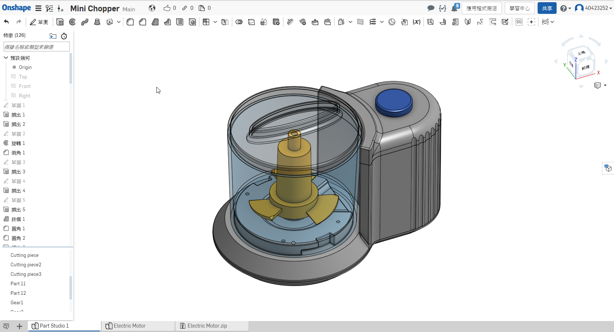

9-1-Lesson Plan內容：Advanced Geometry & Design for Plastics(高級幾何與塑料設計)
● Starting Chopper project(啟動斷路器項目)
● Advanced part modeling(高級零件建模)
● 自上而下設計
● 使用曲面
● 拆分零件
● Using variables/expressions(使用變量/表達式)
● Editing appearance/transparency(編輯外觀/透明度)
Plastic Injection Molding(塑膠射出成形) and Computer Numerically Controlled (CNC數值控制工具機)
variables and equations(變量和方程創建智能CAD模型)
interference detection(乾涉檢測)
mass properties(質量屬性)
重點：
一.與揚聲器一樣專注於"自上而下的設計"
二.Design for Plastic Injection Molding: Draft(注塑成型設計：草案)
1.準備好模具，塑料熔化
2.這兩半被壓在一起。 兩半相遇的平面稱為“中性平面”或“分型線”。
3.注入熔融塑料以取出模具的形狀，然後冷卻直至塑料變硬
4.打開模具，取下部件
三.Radii(半徑)
為了避免零件黏在模具中以及在使用使導致汽缸本身產身集中應力，則須在角落處添加小半徑。
四.Surfaces(面)
Onshape可以創建固體和表面。當擠出草圖區域時，結果是實體，但是當我們只拉伸一條線時，結果就是一個表面
五.Split(分裂)
1.使用拆分功能是自上而下設計不可或缺的部分，因為它允許我們將整個斬波器設計為單個部件，然後將其拆分為單獨的部件以進行製造和
裝配。
2. 分割特徵允許部件或面通過交叉表面進行物理分割。
六.Variables/Expressions(變量/表達式)。
1.變量是“自上而下”設計中使用的另一種工具，可用於方程，表達式和整個數學函數數組，是一種強大的驅動設計方式，通過賦予變量有意義的名稱，它也是一種記錄設計意圖的方法，
由於厚度代表實際製造，參數（塑料零件的標稱厚度）變量有助於我們表達我們的設計意圖，在優化成型過程中改變標稱壁厚並不罕見，因此使用這樣的變量可以快速，輕鬆地更新整個模型。
9-1-Lesson Plan
